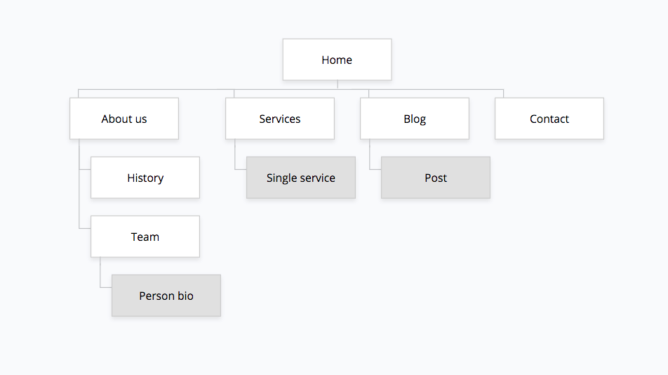
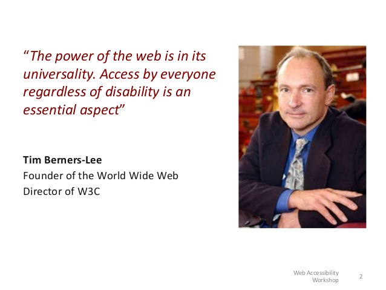
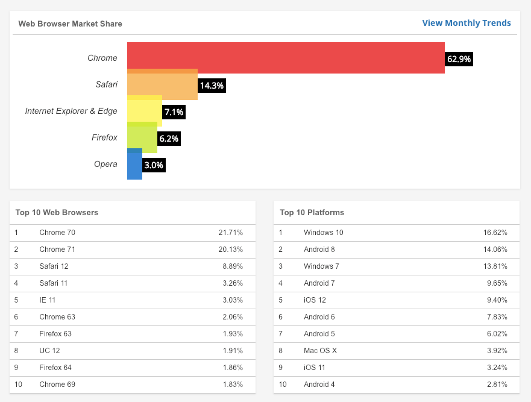

What should be included in a website specification?
Every website specification will be different. For example, a project might include both design and development, whereas another project might be a build only, with designs etc already completed.
However, there are some sections of a specification that will be common to most web projects.
The following is a list of some of those common sections, with descriptions and examples included. You can pick and choose which of these to include, or add sections that aren’t listed here.
Anything that is relevant to the project and that needs to be communicated should be included in your specification
OVERVIEW
This section should give a basic overview of the project and the organisation behind it. An overview could include:
- About your organisation – A brief company background and history.
- What problem are you trying to solve? –Why is the project needed?
- High-level project scope –Is it a redesign of a few pages, a complete website overhaul, or a brand new website?
- Target market – An overview of who this website is targeted at. This could also be it’s own section in the document.
PROJECT TEAM
A list of the decision makers involved in the project. It is useful to include job titles/project roles, and email addresses.
The project lead should both be highlighted here.
For example:
-
Rachel Adams – CEO – racheladams@acme.co
-
John Smith – Marketing Manager – johnsmith@acme.co
-
Sarah Jones – Web Content Manager – sarahjones@acme.co – Project Lead
GOALS
Briefly describe the goals of the project. This will give developers an idea of what you are trying to achieve, which will enable them to suggest the most appropriate solutions.
For example:
-
Monthly sales enquiries up by 10% within 3 months
-
Decrease bounce rate by 10% by 1st July
-
Increase newsletter signups by 23% by December
-
1k new Twitter followers within a year
Goals should be SMART, that is:
-
Specific
-
Measurable
-
Assignable
-
Realistic
-
Time-related
PHASES
If this project is part of a bigger project, or there will be further phases following this project, it is useful to list these to give an indication of where this project fits into the bigger picture.
For example:
-
Phase 1 – Basic marketing website – Current project
-
Phase 2 – Add e-commerce
-
Phase 3 – CRM integration
CONTENT STRUCTURE
Content structure, or Information Architecture (IA), is comprised of various parts and will depend on the complexity and size of your website content.
Site map
This is usually provided as a diagram which shows the ‘tree’ type, hierarchical structure of the website pages. It can also include which ‘page template’ (see below) to use for each page and content type.

There are excellent tools available for creating website sitemaps. We love Gloomaps.
Content types
A website can contain many distinct types of content. At it’s most basic, there will usually be posts and pages. A page is timeless content, e.g. ‘About us’, whereas a post is chronological, e.g. a news or blog post.
Some other common examples of content types are:
-
People
-
Products
-
Testimonials
Taxonomies
A taxonomy is a scheme of classification for your website content. You can set site-wide taxonomies to be used across all content types, or you can have taxonomies that are specific to certain content types.
There are two main types of taxonomy:
-
Hierarchical – e.g. ‘Categories’
-
Non-hierarchical – e.g. ‘Tags’
Page templates
A page template is a specific layout of information. For example, your ‘Home’ page will probably look different to your ‘Contact’ page.
Some examples of common page templates are below:
-
Home
-
Blog post
-
Our team
-
News archive – lists all the sites news posts in reverse chronological order
-
Contact – may have a map and a form
DESIGN
The content of this section will depend on whether a design already exists, or whether creating a design is part of the scope of work.
Responsive designs
Today’s websites are viewed on a wide range of devices and screen sizes. It is important to consider how your site will look, especially on small screens such as smartphones.
Mobile designs (and possibly tablet sizes) should be provided along with the usual desktop designs.
FUNCTIONALITY
Functionality is how your site actually works. This could be anything about specific parts of the website that need additional explanation.
For example, if you have a signup page, what fields are required? What happens to an entry on a contact form?
Many sites require integrations with third-party APIs. If this is the case then these integrations should be outlined here in terms of how they will work and any additional information that is needed. A good example of an integration is showing a feed of latest Tweets on your site.
Here are some examples of functionality you may want to mention, depending on your project.
-
e-Commerce functionality such as payment gateways
-
SSL – is this required and how it should be implemented
-
Multi-lingual capabilities
-
User roles and capabilities – more than 1 type of user role where users can have different permission etc.
-
Analytics and tracking
-
Specific functionality around search
-
Performance requirements
ACCESSIBILITY
Web accessibility is the practice of building websites that work for anyone, regardless of technology, location, or ability.

All websites should strive to achieve the highest levels of accessibility, but if you have specific requirements around this, then outline these as part of your specification.
BROWSER AND DEVICE SUPPORT
Websites can be viewed on a wide range of devices and browsers. It is important to know which of these browsers and devices need to be supported, as their technical requirements can vary.
In particular, if you require support for older browsers (typically Internet Explorer) this can add to the overall project cost.
At the end of 2018 and the start of 2019, the global browser landscape looks like this:

HOSTING
This section should outline the hosting requirements of the site.
If you already have a host then work over it,Otherwise check below links.
For WordPress sites, the hosting requirements can be found here: WordPress
For OpenSource sites, you can go to: Github
ONGOING SUPPORT AND MAINTENANCE
Websites need to be updated, maintained and improved over time. If you are using a platform such as WordPress, the code base will quickly deteriorate if not regularly updated. This can lead to performance, compatibility, and security issues.
ASSUMPTIONS
One of the most common problems that projects run into is that parties have made assumptions about who is responsible for certain tasks.
The classic example is who adds the content. Often people commissioning websites (rightly) assume that the web company will add all of the content. However, often this is not the case and the client receives an ’empty’ version of their website.
Your website specification document should include everything that is needed for this project to be completed successfully.
Some common assumptions to think about include:
-
Content addition
-
Design and layout customisation options
-
Migrating the site to the live server
-
Ongoing maintenance
-
SEO
-
Hosting
MILESTONES
Many projects, especially if using a ‘fixed-cost’ approach, will have set milestones along the way. These are clear phases of the project where you will be working on different aspects of the site.
An example of some typical web project milestones are:
-
Wireframes
-
Designs
-
Development (Front and Back-end)
-
Testing and feedback
-
Go Live
DEADLINES
Even if you don’t have set milestones, it’s still important to have an idea of the timescales involved, especially if there is a fixed deadline – an event, for example.
BUDGETS
The budget required for the project should be clearly stated in this section. Often, a breakdown of the budget can be given here for the different milestones or phases, if this is appropriate.
This section could also include information about the preferred pricing model, e.g. fixed-price or time and materials.
IN SUMMARY
A detailed website specification can be the difference between success and failure for a web project. It will help communicate your business goals and requirements to any internal or external teams involved in the project.
It is always worth making the initial investment to get this right at the start as it will save pain further down the line.
Good luck with your web project!